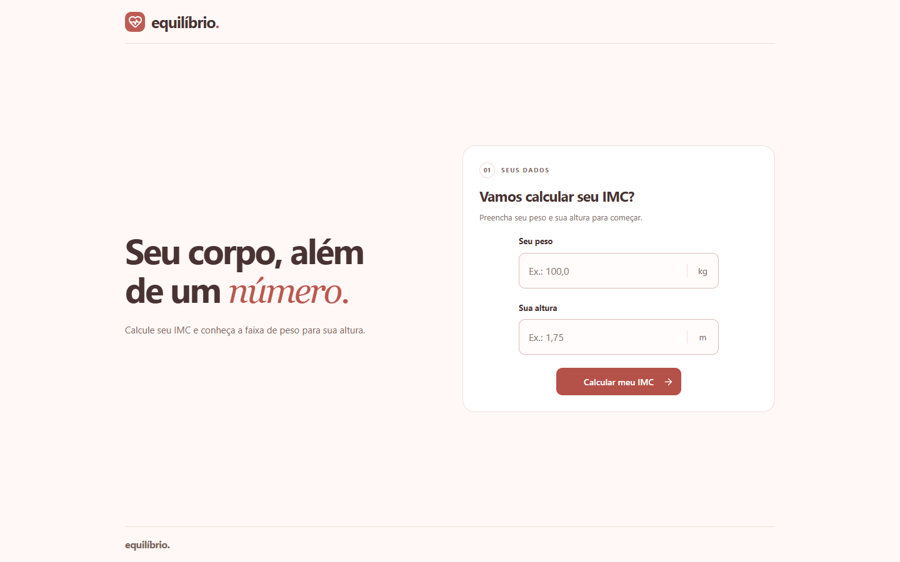
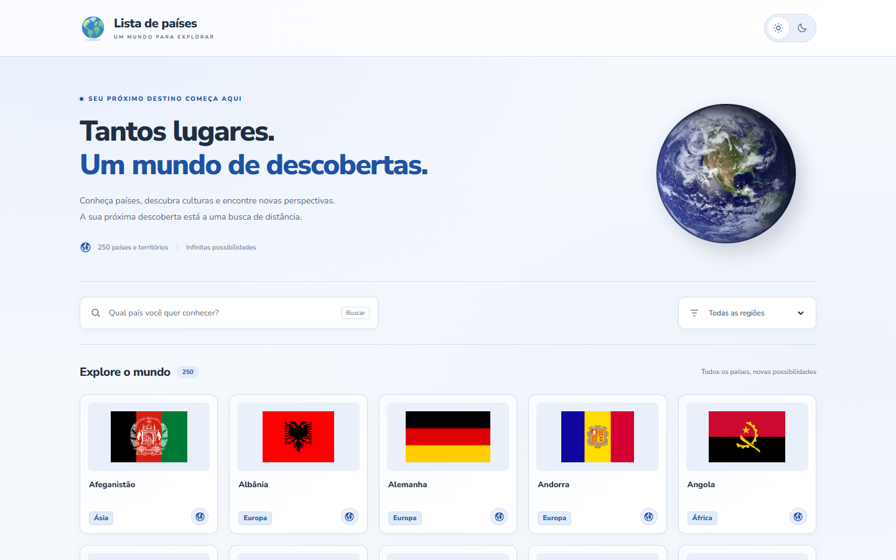
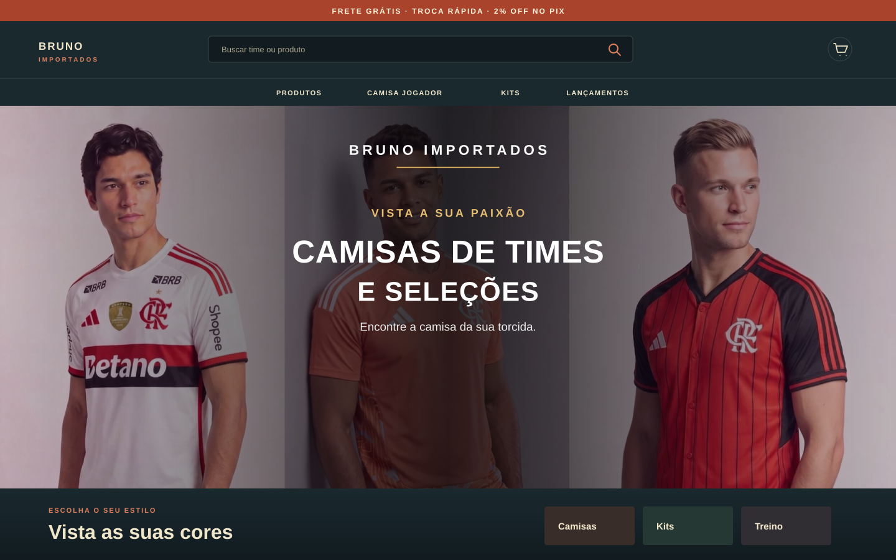

Saúde
Calculadora de IMC
Uma ferramenta simples para calcular o Índice de Massa Corporal a partir de peso e altura, apresentando o resultado de forma rápida e fácil de entender.
Olá, eu sou
Desenvolvedor Web Full Stack
Transformo curiosidade e aprendizado em experiências digitais úteis, acessíveis e bem construídas.
Sou José Luiz, estudante de Análise e Desenvolvimento de Sistemas e desenvolvedor em transição de carreira. Minha curiosidade por tecnologia começou cedo e ganhou força quando encontrei na programação uma forma de criar soluções e aprender continuamente.
Tenho formação técnica em Automação Industrial e também estudei desenvolvimento de software na Trybe. Ao longo dessa jornada, construí mais de 20 projetos e venho praticando desenvolvimento mobile e web com JavaScript, TypeScript, React, Node.js, Kotlin, Android, MySQL e Docker. Gosto de desafios que me permitem evoluir e contribuir com produtos que fazem sentido para as pessoas.
Tecnologias em prática


Aprendizado colocado em prática
Uma seleção de experiências que venho construindo.

Uma ferramenta simples para calcular o Índice de Massa Corporal a partir de peso e altura, apresentando o resultado de forma rápida e fácil de entender.

Uma interface para explorar países e suas informações, organizada para tornar a consulta mais prática e a navegação mais clara.

Loja virtual demonstrativa de camisas, kits e roupas de treino. Reúne vitrine de produtos, busca, filtros, seleção de tamanho e carrinho persistente, com checkout ilustrativo e alternância entre tema claro e escuro.